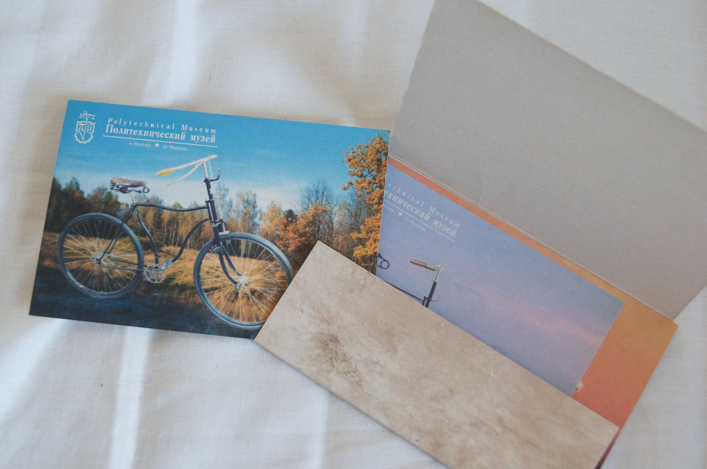

Сегодняшний день я провела в парке Сокольники. Пока позволяет погода, я стараюсь проводить больше времени на свежем воздухе. К счастью, парк от меня недалеко, поэтому я легко могу добраться туда на велосипеде. В этот день я посетила сиреневый сад и современный музей каллиграфии.
